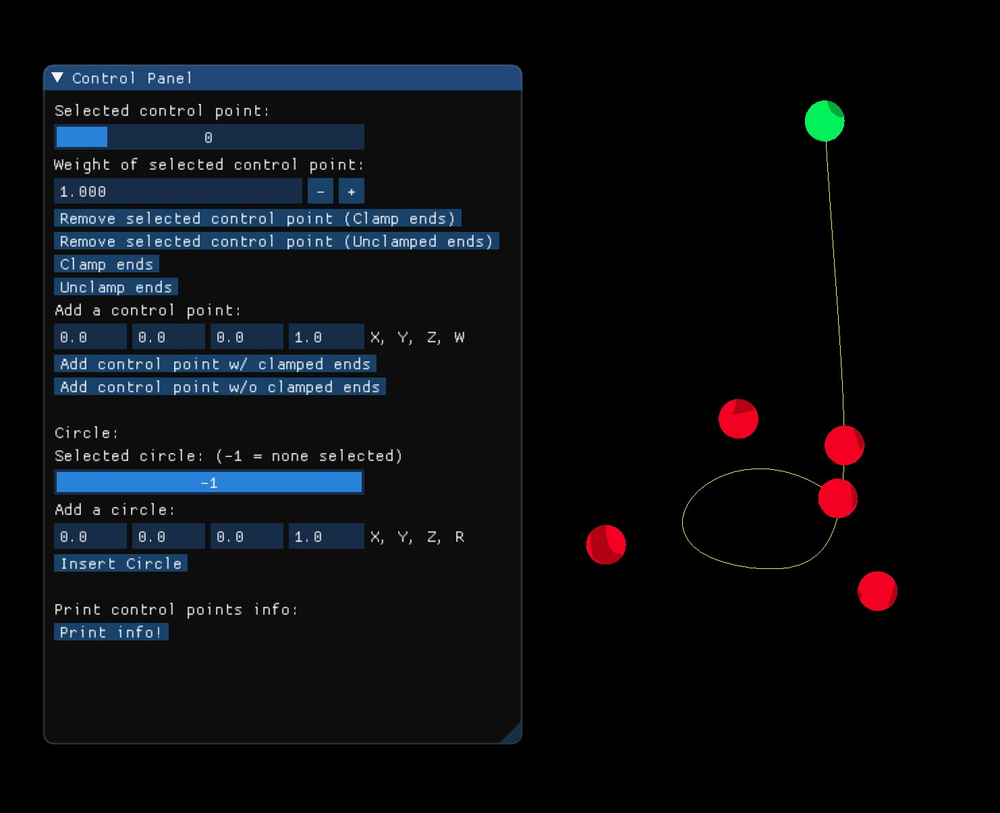
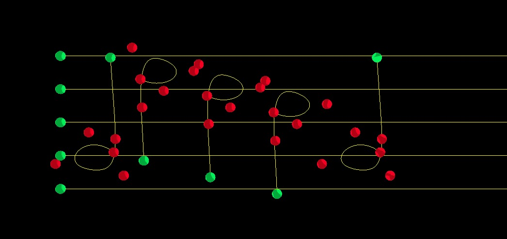

For the final project for my Computer Graphics class in fall 2023, my teammate and I built an user friendly editing tool to work with non-uniform B-splines (NURBS) curves & surfaces. NURBS is widely used in real-world applications such as modeling, and our editing tool allows users to conveniently render curves or surfaces they want with NURBS.
Motivation
We chose to work with NURBS because of its wide applicability, from both the theoretical and practical aspects.
On the theoretical side, NURBS provides a mathematical basis for representing both analytic shapes and free-form entities [5].
Moreover, the local-control feature of NURBS makes it geometrically intuitive to design with NURBS (adding / removing a control point only changes the local shape), enabling local editing of the curve shape.
NURBS curves and surfaces are invariant under common transformations. Lastly, in terms of performance, NURBS algorithms are fast and numerically stable.
On the practical side, NURBS is very popular for CAD, visualizations, industry modeling, etc.
Background
The framework of this project was built on top of a previous assignment on Bezier & B-splines.
NURBS is a generalization of Bezier and B-splines, as it weights control points and has rational curves.
In particular, it has the extra parameters of weights and non-uniform knots, which are not present in default Bezier or B-splines.
Most of our computations and algorithms are based on The NURBS Book by Piegl and Tiller [5], which covers this topic in extensive details.
In addition, since one special aspect of NURBS is that it can draw a perfect circle as well as sphere (whereas non-rational Bezier can only give approximations), we referred to "Representing a Circle or a Sphere with NURBS" by Eberly [1] for building our procedural code to draw a sphere.
To double-check that our curves and surfaces are correct, we used an online NURBS calculator [4].
Approach
In this section, we lay out how we go from the math formulas of NURBS to implementation in C++.
NURBS Curve
A pth degree NURBS curve is defined as [5]:
where \(\{P_{i}\}\) are control points, \(\{w_{i}\}\) are weights, \(\{N_{i,p}(u)\}\) are the \(p\)th degree B-spline basis functions defined on the non-periodic and non-uniform knot vector (clamped endpoints here):
To calculate the B-spline basis function \(N_{i,p}(u)\) given any knot vector \(U\) and degree, we used a dynamic programming tabular method derived from the Cox-deBoor recurrence formula:
NURBS Surface
A NURBS surface is defined by a control points net, which form NURBS curves in \(u\)- and \(v\)-directions. A NURBS surface of degree \(p\) in \(u\)-direction and degree \(q\) in \(v\)-direction is defined as [5]:
where the notations are similar to those in the curve's equation, except that the surface is in \(uv\)-coordinates.
The surface points were able to be implemented by building on top of our curve implementation. However, we also needed to calculate the surface normals for shading. At a high level, the surface normals are the normalized cross product of the partial derivatives with respect to \(u\) and \(v\):
where \(S^{(k,l)}(u,v)\) is the (\(k\)th, \(l\)th) partial derivative of a NURBS surface at point \(S(u, v)\) with respect to the variables \((u, v)\), which can be derived using the Leibniz rule (the product rule for finding higher order derivatives):
where \(A^{(k,l)}\) and \(w^{(i,j)}\) are found through the following steps:
2. Compute the derivatives of the degree \(p\) (\(p = p\) for \(u\)-direction, \(p = q\) for \(v\)-direction) B-spline basis functions:
3. Compute the derivatives of the B-spline surface in \(u\)- and \(v\)-directions using homogenized coordinates \(P_{i, j} = (x, y, z, w)\):
4. Finally, let \(A^{(k,l)} = D^{(k,l)}.xyz \,\,\) and \(\,\, w^{(i,j)} = D^{(i,j)}.w\).
5. Once we have the coordinates of each surface point and the normals, we render the surface using the subdivison surface method.
Visualize Music Scores with Curves
After we successfully implemented NURBS and built the editing tool, we put it to use by drawing a music score using the curves. Specifically, users could input a file that contains a series of music notes such as "G5," and the GUI will automatically output the music score on the screen.
To achieve this, we first built and saved the music note shape using our NURBS curve editor, and then assigned different notes to different positions / orientations of the music note shape.
Results
GUI for Curve Editing
Our user interface for curve editing includes the following functionalities (as shown in the video at the beginning):
2. Add / remove control point(s), and appropriately recalculate the knot vector;
3. Take in a circle's center coordinates and radius as input, automatically generate the corresponding NURBS control points, and draw the circle.
GUI for Surface Editing
Our GUI for surface editing can also select any control point and edit its location or weight.
Music Scores Visualized with NURBS Curves
We first saved the music note shape that we built:

Then, we feed in a file that contains music notes. For example,
Our GUI then outputs the following music score onto the screen:

Conclusion
Summary
We built a NURBS curve and surface editing tool, as well as an extension to a sheet music visualizer.
The curve-editing GUI enables users to conveniently edit the look of any NURBS curve and save control point information for later. In addition, the user could also add perfect circles to the scene, with custom center poosition and radius.
For the surface-editing tool, users could move and re-weight control points. The challenging part here during implementation was calculating the surface normals.
Lastly, we applied the tool to visualize input music scores with NURBS curves.
Future Extensions
There are two potential directions we want to further explore:
2. Since NURBS is the industry standard for modeling and it's fast as well as numerically stable, we want to explore efficient rendering of large-scale NURBS models. We want to replicate the 2023 SIGGRAPH paper by Xiong et al. [6], which uses an elastic tessellation framework for NURBS rendering.
References